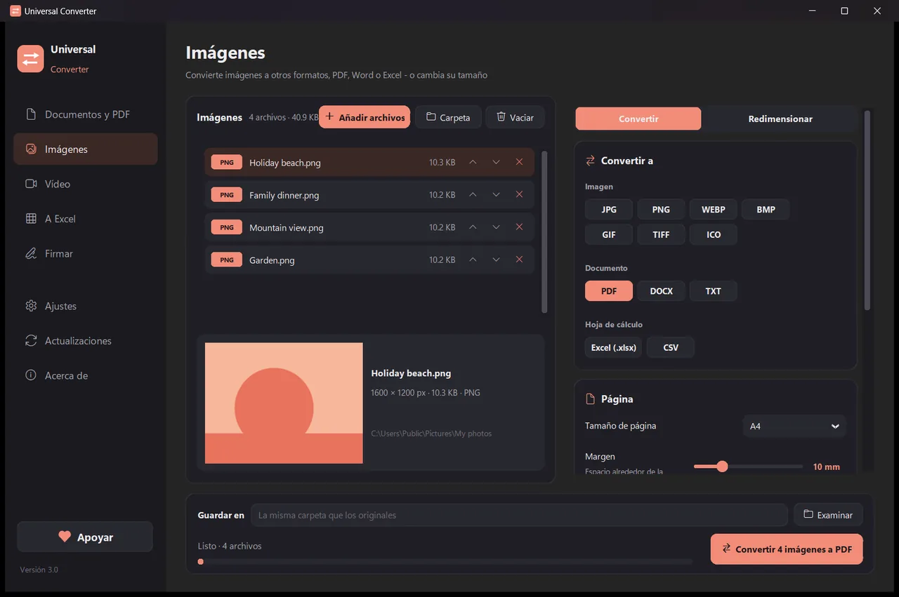
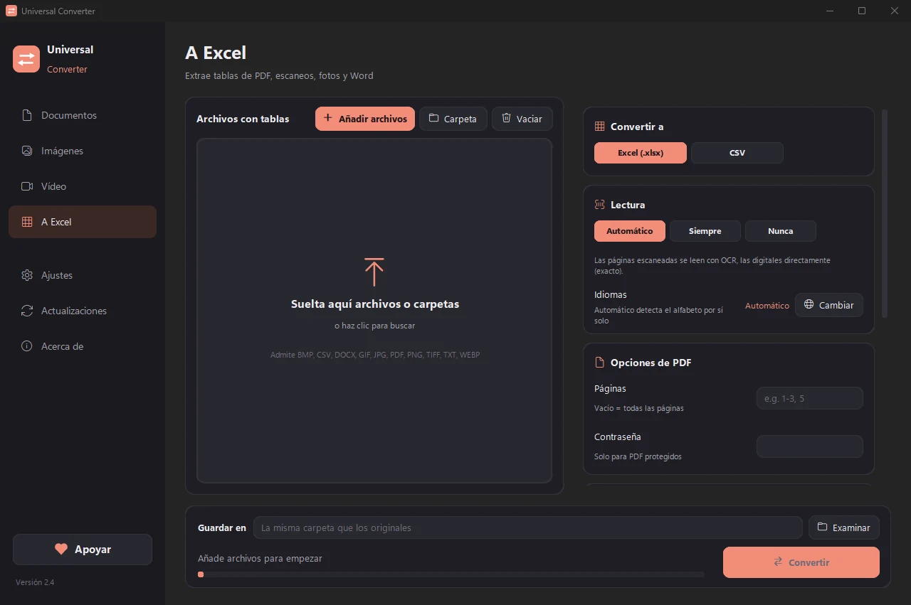
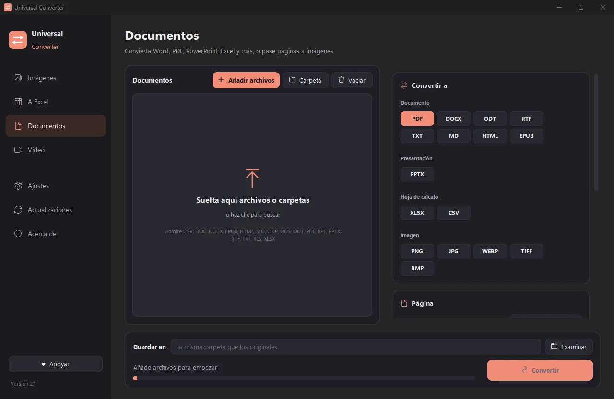
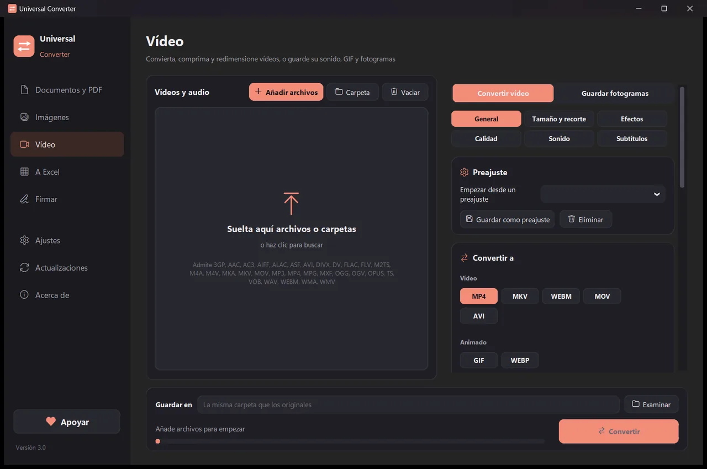

Convierte tus archivos en tu propio dispositivo
Imágenes, documentos, vídeo y audio, PDF y tablas a Excel, todo en una sola aplicación. No se sube nada: tus archivos nunca salen de tu dispositivo.
Cómo instalar y actualizar
- Abra el .dmg descargado y arrastre Universal Converter a Aplicaciones.
- Abra la app. La primera vez macOS la bloquea porque no está firmada por Apple: pulse OK.
- Abra Ajustes del Sistema > Privacidad y seguridad, desplácese hacia abajo, pulse «Abrir igualmente» e introduzca su contraseña. Solo se hace una vez.
Actualizaciones: si lo permite al abrirla por primera vez, la app busca versiones nuevas cada vez que se inicia, comprueba su firma digital y las instala cuando usted elija.
Cómo instalar y actualizar
- Pulse «Descargar para Android» en su teléfono.
- Abra el archivo descargado. Si Android lo pide, permita que su navegador o gestor de archivos instale apps.
- Pulse Instalar.
Actualizaciones: la app comprueba aproximadamente una vez al día y le avisa cuando hay una versión nueva. Descárguela del mismo modo e instálela sobre la anterior; sus ajustes se conservan.

Privado
Todo se hace en tu dispositivo. Sin subidas, sin colas de espera, sin límites de tamaño.
Gratis
De uso gratuito, sin anuncios, sin cuenta y sin marcas de agua.
10 idiomas
Español, inglés, griego, italiano, alemán, francés, portugués, chino, japonés y coreano.
Cuatro herramientas en una ventana
Imágenes
Convierte entre JPG, PNG, WEBP, TIFF, BMP, GIF e ICO. Cambia el tamaño en píxeles, porcentaje o tamaño de archivo, une imágenes en un PDF o Word y lee el texto de las imágenes (OCR).

A Excel
Saca tablas de PDF, escaneos y fotos a Excel o CSV: extractos bancarios, facturas, listas de precios. Lee español, inglés, griego y más de 30 idiomas.

Documentos
Convierte entre PDF, Word, ODT, RTF, TXT, Markdown, HTML, EPUB, PowerPoint y Excel. Pasa páginas a imágenes y une varios archivos en un PDF. Se conservan fuentes, tamaños y colores.

Vídeo
Convierte vídeos entre MP4, MKV, WebM, MOV y AVI, y comprímelos, con AV1, H.265, H.264 o VP9. Recorta, encuadra, gira y cambia el tamaño, crea GIF, guarda fotogramas como imágenes o quédate solo con el sonido en MP3, M4A, FLAC, WAV, OGG u Opus. En Android: MP4 o MKV con H.264 o H.265; recortar, encuadrar, girar, cambiar el tamaño, guardar fotogramas o el sonido en M4A.
- Usa la tarjeta gráfica para el vídeo cuando puede: normalmente de 5 a 20 veces más rápido.
- Arrastra carpetas enteras: todos los archivos se convierten de una vez.
- Te avisa de las versiones nuevas; en Windows y Mac puede instalarlas por ti, verificadas digitalmente.
- Aspecto claro u oscuro, como tu dispositivo.
Cómo funciona
- Abre Universal Converter y elige Imágenes · A Excel · Documentos · Vídeo a la izquierda.
- Arrastra tus archivos o una carpeta entera a la ventana, o pulsa Añadir archivos.
- Pulsa Convertir. Los archivos nuevos se guardan junto a los originales o en la carpeta que elijas.
Qué puede hacer
- Comprimir un vídeo sin subirlo
- Convertir vídeos entre MP4, MKV, WebM, MOV y AVI
- Guardar el sonido de un vídeo en MP3
- Crear un GIF a partir de un vídeo
- Pasar tablas de un PDF a Excel
- Unir fotos en un solo PDF
- Convertir un PDF a Word
- Unir varios archivos en un PDF
- Copiar el texto de una imagen (OCR)
- Convertir imágenes entre JPG, PNG, WEBP y más
- Cambiar el tamaño de imágenes o reducirlas a un tamaño de archivo
- Convertir un extracto bancario en PDF a Excel
- Extraer tablas de facturas en PDF a Excel
- Convertir un documento escaneado en un Word editable
- Convertir páginas de PDF a imágenes JPG
- Convertir documentos de Word a PDF
Preguntas
¿De verdad es gratis?
Sí. Universal Converter es de uso gratuito, sin anuncios, sin cuenta y sin límite de tiempo. Si te resulta útil, puedes apoyar su desarrollo con una contribución voluntaria, pero nunca es obligatorio.
¿Se suben mis archivos a algún sitio?
No. Cada conversión se hace en tu propio dispositivo, así que también funciona sin conexión a internet. La aplicación solo se conecta para buscar actualizaciones, para descargar los idiomas extra que elijas y, si lo permites, para enviar informes de errores anónimos.
Windows muestra un aviso de SmartScreen. ¿Es normal?
Sí. El instalador aún no tiene firma de código, así que Windows no lo reconoce. Elige «Más información» y luego «Ejecutar de todas formas». Las actualizaciones posteriores las verifica digitalmente la propia aplicación. O instálalo desde Microsoft Store, que no muestra ningún aviso.
¿Cómo lo abro en un Mac?
Abre el archivo descargado y arrastra Universal Converter a Aplicaciones. La aplicación no está firmada por Apple, así que la primera vez que la abres macOS la bloquea: pulsa OK, abre Ajustes del Sistema > Privacidad y seguridad, pulsa «Abrir igualmente» e introduce tu contraseña. Solo hace falta una vez.
¿Cómo lo instalo en Android?
Descarga el APK en el móvil, ábrelo y permite la instalación cuando te lo pida (Android 10 o posterior). El inglés y el griego vienen incluidos; los demás idiomas se descargan en los Ajustes de la aplicación. La aplicación te avisa cuando hay una versión nueva.
¿En qué idiomas está?
La aplicación está en español, inglés, griego, italiano, alemán, francés, portugués, chino, japonés y coreano. Eliges el idioma en el instalador o más tarde en Ajustes.
Apoya Universal Converter
Universal Converter lo hace una sola persona y sigue siendo gratis. Si te ahorra tiempo, una contribución voluntaria ayuda a que continúe. Los pagos se hacen con PayPal o Revolut y la aplicación nunca ve tus datos de pago. Las contribuciones apoyan su desarrollo y sus costes. No son deducibles de impuestos.